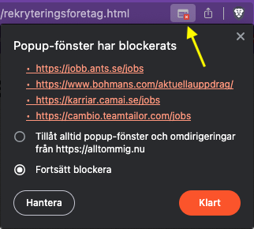
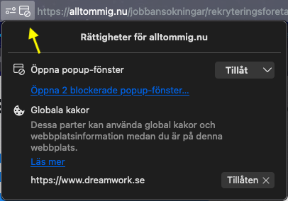
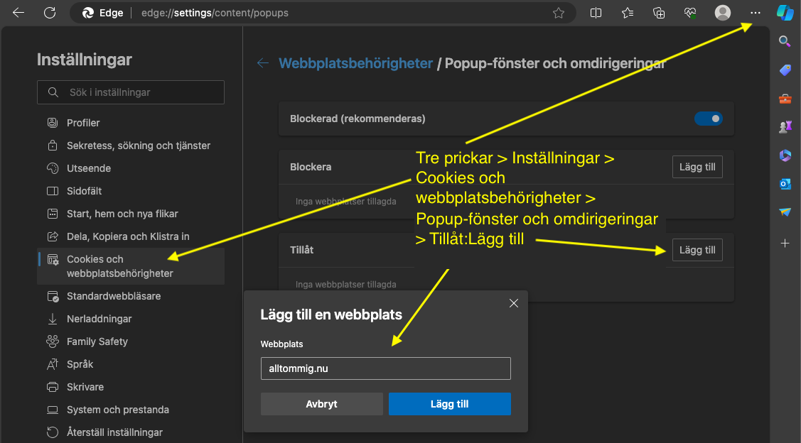

Varje knapp öppnar siterna i nya flikar, om öppna popup är tillåtet i din webbläsare. Se nedan.
De flesta länkar skall vara förinställda på Stockholm och de områden jag söker jobb inom (Administration, IT-support, Frontendutveckling mm).
XXX
Din webbläsare blockerar normalt popup-fönster och visar detta med en
liten symbol i eller omkring adressrutan. Finn den, och tillåt.
Skärmdump från Brave respektive Firefox.
 
I Edge måste man tillåta popups i inställningarna. Ser ut så här:

I Sverige finns många rekryteringsföretag, stora som små, där de försöker sammankoppla arbetsgivare med de jobbsökanden som du.
Iden är att du skall kunna öppna tre lediga-jobb-sidor i taget, scanna av jobbannonserna, stänga ner lediga-jobb-sidan och sedan ta nästa omgång med tre sidor med platsannonser hos rekryteringsföretagen.
I dessa knappar finns i XX sådana jobbannons-sidor hos rekryteringsföretagen.
Du kan förstås även ersätta denna sida med några bokmärken sparade i mappar i din webbläsare.
Det är förmodligen en god ide att ha en registrerad profil med aktuell information i form av kompetenser, utbildningar, arbetslivserfarenhet på de flesta eller alla dessa sidor. Som då skickas med varje ansökan hos dem. För ett par av dessa rekryteringsföretag behöver du det för att kunna se listan på lediga jobb-annonser. En del, men inte allar har fullt utvecklade profil-sidor för jobbsökandet som rekryterarna använder för att hitta kandidater.
Förutom att ha en profil hos dem bör du se till att din LinkedIn-profil är uppdaterad, då många rekryteringföretag och arbetsgivare låter dig logga in med och hämtar då från Linkedin information om dig, vilket gör ansökningsprocessen lite lättare.
En del av företagen har inte profil-sidor, andra har en basal sådan där man "connectar", dvs lämnar sin epost och svarar på 3-6 frågor och kan ladda upp en CV. Då kan man få mail med platsannonser.
Detta är länkarna i knapparna:
XXX
Vi kan förstås lägga till LinkedIn och Arbetsförmedlingens Platsbank.
Denna sida finns även som ett projekt på github. Det betyder att du kan ladda hem hela projektet med alla sidor och anpassa det som du vill och publicera det på din egen webbserver/webhotell. Eller bara spara som en fil i datorn du kan dubbelklicka på så öppnas den i webbläsaren. Vill du exempelvis byta ort och förinställda kategorier av jobb (som lagrats i URL'erna), så är det så du gör (eller ber mig).
Github: https://github.com/Taz-1999/Rekryteringsforetag-med-Lediga-Jobb-sidor.
Av: Ola Andersson, rekryteringsforetagsidan@mammals.se
Min egen CV: https://alltommig.nu/cv
Jag söker förresten jobb som Frontend-utvecklare, IT-support, Administratör, Utbildare och Marknadsförare. Se personliga brev med CV's här.
Denna sidas adress: https://alltommig.nu/rekr
XXX